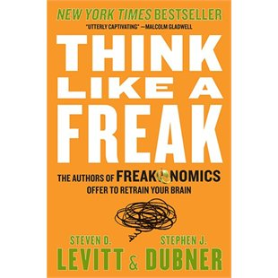

Think Like A Freak
by Stephen Dubner, Steven D Levitt
- Description
- In their smash #1 international bestsellerFreakonomics, Steven D. Levitt and Stephen J. Dubner showed the world that applying counter-intuitive approaches to everyday problems can bear surprising results. In this dynamic, essential book, they turn your brain inside-out,teaching you how to think like a freak. Levitt and Dubner analyze the decisions we make, the plans we create and the morals we choose, and they show how their insights can be applied to daily life to make smarter, harder and better decisions.
- Price
- $21.53 USD
- Related titles
- Commander in Chief, Into the Fire